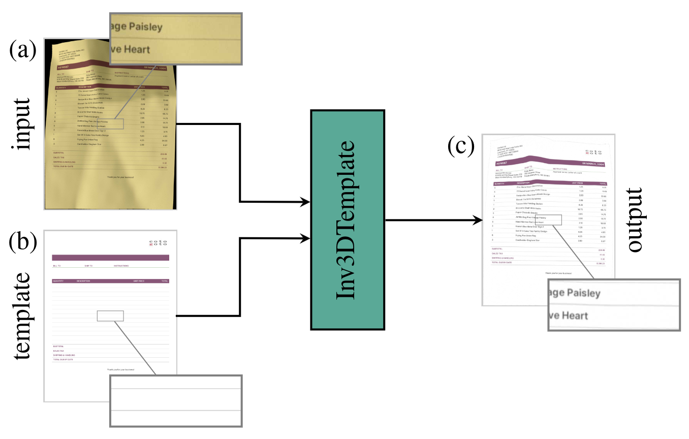

To facilitate the transition into the digital era, it is necessary to digitize printed documents such as forms and invoices. Due to the presence of diverse lighting conditions and geometric distortions in real-world photographs of documents, document image restoration typically consists of two stages: first, geometric unwarping to remove the displacement distortions and, second illumination correction to reinstate the original colors.
In this work, we tackle the problem of illumination correction for document images and, thereby, enhance downstream tasks, such as text extraction and document archival. Despite the recent state-of-the-art improvements in geometric unwarping, the reliability of those models is limited. Hence, we aim to reduce lighting impurity under the assumption of imperfectly unwarped documents. To reduce the complexity of the task, we incorporate a-priori known visual cues in the form of template images, which offer additional information about the perfect lighting conditions.
In this work, we present a novel approach for integrating prior visual cues in the form of document templates. Our extensive evaluation shows a 15.0 % relative improvement in LPIPS and 6.3 % in CER over the state-of-the-art. We will make all code and data publicly available on this website.

Figure: Our transformer-style model leverages templates (b) in
addition to the input image (a) to achieve high quality results (c)
for illumination correction in document images with imperfect ge-
ometric reconstruction. Our architecture IllTrTemplate extends
state of the art IllTr [1].
@article{Hertlein2023,
title = {Template-guided Illumination Correction for Document Images with Imperfect Geometric Reconstruction},
author = {Hertlein, Felix and Naumann, Alexander},
year = 2023,
journal = {International Conference on Computer Vision Workshop (ICCVW)}
}